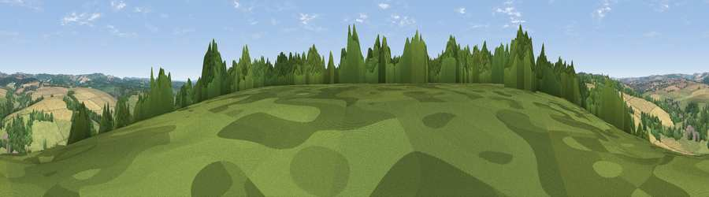

Viewpoint near Hurstbourne Tarrant
#32235 in England · top 41% of its area beats it · near Hurstbourne Tarrant · footpathWhere it is
The exact computed spot (SU 38475 52225). Click the marker for map links.
Public access: a public right of way passes within 27 m of this spot. Computed from Natural England's CRoW access layer and OpenStreetMap rights of way — not the legal definitive map. Always verify locally.
The view, rendered

A 360° render of this exact spot computed from the terrain model, tree cover and land cover — summer colours, afternoon light, calibrated against photographs of famous viewpoints. Real trees, hedges and buildings will differ in detail.
The panorama
Grey silhouette: terrain skyline in each direction (720 bearings, Earth curvature and refraction included). Dashed green: skyline with trees (+15 m) and buildings (+8 m) as obstacles. Blue strip: how far the ground is visible on each bearing.
Where the view opens
Wedge length = distance to the farthest visible ground on that bearing (vegetation-aware). Rings at 10, 25 and 50 km.
What fills the view
37% cropland · 34% grassland · 28% woodland ·
Angular shares of the visible panorama (visual magnitude), not map area. Landscape diversity 0.49 (0–1 Shannon).
Key numbers
More beautiful places nearby
The staircase of upgrades: each row has a higher view potential than everything closer. Driving times are estimates from straight-line distance, calibrated against real road routing — check an actual route before setting out.
| Place | Direction | Drive | Score |
|---|---|---|---|
| Doiley Hill | NE · 2 km | ~6 min | 37.1 |
| Viewpoint near Upton | NW · 3 km | ~7 min | 40.7 |
| Viewpoint near Tangley | WNW · 5 km | ~11 min | 43.0 |
| Viewpoint near Old Burghclere | ENE · 7 km | ~15 min | 56.7 |
| Viewpoint near Old Burghclere | NE · 8 km | ~16 min | 67.5 |
| Viewpoint near East End | NNE · 8 km | ~16 min | 69.4 |
| Beacon Hill | NE · 9 km | ~18 min | 76.7 |
| Martinsell viewpoint | WNW · 24 km | ~39 min | 76.9 |
51.26789, -1.44990 · source: screening · position refined by local search. Computed location — check access rights before visiting.